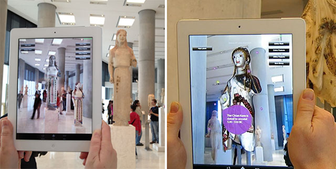
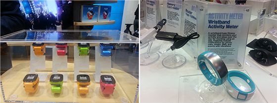

Tendencias tecnológicas en los museos más allá de 2015
Introducción
La tecnología, lo sabemos y lo vivimos, avanza muy deprisa. Algunos avances han arraigado y se han extendido a una velocidad vertiginosa. Otros, que parecía que podían hacerlo, se han ido quedando en el camino, lo que aconseja una cierta prudencia antes de embarcar a nuestro museo en nuevos soportes, redes o funcionalidades, pero sin dormirse, ya que los usos sociales evolucionan rápidamente también y no conviene quedarse desfasados. Algunos avances llevan ya bastante tiempo en marcha y ahora toman un nuevo empuje o realizan nuevos.
Desde poco antes de acabar el año, han proliferado los artículos predictivos sobre qué nos deparará 2015 en cuanto a tecnología. Eso sumado a las reflexiones escuchadas en un par de conferencias y a aportaciones propias, me ha parecido interesante intentar destilar qué tendencias de las apuntadas nos tocan más de cerca a los museos.
Realidad aumentada (RA) y realidad virtual (RV)
La gran aportación de la virtualidad es que nos permite hacer cosas que en el mundo real no son posibles: trasladarnos en el tiempo y en el espacio. Para los museos ofrece un gran potencial, si la sabemos utilizar bien para reconstruir entornos del pasado, para dotar de contexto a las piezas, para añadir capas extra de información –textual, sonora, fotográfica, audiovisual, de animación, en 3D, etc.– a lo que tenemos delante, para ofrecer experiencias inmersivas y partici
La realidad aumentada, que permite incorporar información virtual a la información real, ya hace tiempo que provee a los museos de experiencias interesantes. En 2015 prevemos más y más museos utilizándola para ofrecer nuevas capas de interpretación a los objetos de sus colecciones.

Realidad aumentada en el Museo de la Acrópolis, Atenas. Imagen: CHESS project
En el artículo Using Augmented Reality in the Museum, a partir de un proyecto piloto y del proyector europeo meSch, se apuntan algunos retos de la RA en museos como las funcionalidades ofrecidas, la explicación clara de lo que puede esperar de ellas el usuario, la señalización o la usabilidad.
Gamificación
Tanto si aplicamos el término procedente del inglés gamification como si le llamamos ludificación, nos referimos a la técnica y práctica de aplicar mecánicas de juego a campos en los que habitualmente no se aplican, con la finalidad de provocar nuevos aprendizajes y nuevas experiencias. Como lo define Oriol Ripoll en su excelente artículo Gamificar significa hacer jugar, "gamificar es hacer vivir experiencias de juego en un entorno no lúdico". Con un cierto recorrido en la gestión empresarial, todo apunta a que será una tendencia en crecimiento. Según predecía Gartner, "en 2015más del 50% de las empresas que gestionan procesos de innovación gamificarán estos procesos". Desconozco si la predicción realizada en 2011 se ha cumplido, pero si no se ha llegado al 50% lo que sí está claro es que se trata de una tendencia al alza en entornos empresariales, educativos y, cada vez más, culturales.
Según el libro Gamificación en la Empresa: Lo que los videojuegos nos enseñan sobre gestionar personas de Juan J. F. Valera Mariscal (2013), diversos estudios han demostrado que los videojuegos aportan:
mejora y rapidez en la toma de decisiones
pensamiento más rápido y memoria más aguda
mejor coordinación motriz y visual
más creatividad
favorecen el aprendizaje
Desde crear actividades gamificadas para nuestros usuarios a aplicar retos y resolución de enigmas propios del juego en el entorno profesional, se abre un amplio abanico de posibilidades para los museos y otros equipamientos culturales.
Algunos de los beneficios para los museos de utilizar la gamificación pueden ser:
atraer nuevos públicos y llegar al público joven
implicar más a los visitantes con los contenidos de la colección
transmitir conocimiento por medio de la interacción y la narrativa
incentivar el análisis crítico, la observación, la imaginación, la creatividad
hacer partícipes a los usuarios de la aventura de exploración y descubrimiento
innovar en la forma de conectar museo y audiencias
Impresión en 3D y escaneo 3D
Las impresoras 3D producen objetos físicos tridimensionales a partir de un modelo digital. Su uso está muy extendido en arquitectura, diseño industrial y también en el ámbito médico. Para los museos presenta usos múltiples en el estudio, exposición o educación, que tendremos que ir explorando. Comentamos diferentes iniciativas en museos de todo el mundo.
La impresión 3D de objetos de museos ofrece diferentes posibilidades para aproximar las obras al público. Quizás en un primer momento pensamos solo en las personas con discapacidad visual, ya que permite explorar al tacto las obras. Pero son útiles también para el público en general y para la educación: son una gran herramienta para sentir el peso y el equilibrio de una escultura, reseguir los contornos, además de permitir ver la obra desde todos los ángulos, con mayor facilidad que con el objeto original. En el Museo de Brooklyn utilizan reproducciones en 3D para sesiones educativas y ofrecen un sensory tour, una visita mensual abierta a todos los públicos.
Why 3D PRINTERS are Awesome for Museums! Vídeo 5’40 min. por Diana Montano
Wearables (vestibles)
La tecnología wearable es una tendencia que todavía se encuentra en fase inicial y que no se prevé que llegue a ser de uso generalizado hasta de aquí a unos cuantos años. Actualmente hay bastantes desarrollos que ya son realidad para monitorizar, por ejemplo, las constante vitales cuando hacemos ejercicio físico, o las calorías que ingerimos, o vestidos que cargan la batería a través de energía solar. Con el apoyo de la Mobile World Capital, se ha podido ver en Barcelona un proyecto piloto de pulseras inteligentes para los clientes de un hotel.

Objetos inteligentes –smart wristbands, smart watches– en el Mobile World Congress 2015 en Barcelona. Fotos: Conxa Rodà
Las posibles aplicaciones para los museos van desde ampliar contexto sobre un período o pieza, rastrear, en tiempo real, el recorrido y los intereses de los visitantes, ofrecer interacción, estimular que se compartan en redes sociales fotos y comentarios, personalizar contenidos y oferta en función de los intereses que conoceremos vía los datos generados por los usuarios.
Big Data
De la agregación estructurada de grandes cantidades de datos procedentes de diversas fuentes se puede generar conocimiento nuevo. Los usuarios somos altamente productivos en proporcionar una cantidad de datos ingente a través de nuestro uso de múltiples plataformas y entornos. Algunos datos los facilitamos conscientemente, otros los captan los sistemas sin que nos demos cuenta cuando navegamos desde el ordenador, cuando operamos desde el móvil, cuando pagamos con tarjeta, cuando emitimos mensajes en las redes sociales, cuando usamos los wearables u objetos inteligentes. Con los riesgos que comporta de vulneración de la privacidad, aunque, supuestamente, se tienen que trabajar los datos anonimizándolos.
Analizando el Big Data en el blog del CCCBLab dicen:
El uso del Big Data, aplicado a la producción cultural, nos permite representar de modo continuo y espacial cómo se conforma nuestra cultura visual y cómo se produce el conocimiento, poniendo a las humanidades digitales ante los nuevos retos de una cultura de datos generada en red. Retos que vinculan el análisis del software con cuestiones epistemológicas, pedagógicas y políticas. Estos plantean diferentes cuestiones, entre ellas: el modo en que se obtienen los datos; qué entidades parametrizamos [...]; cómo asignamos valor a estos datos [...]; cómo se estructura la información en los entornos digitales [...]; qué nuevas formas de narrativa no lineal, multimedia y colaborativa se pueden desarrollar a partir de estos datos [...]
Lo cierto es que la explotación de datos agregados permite identificar patrones de comportamiento y, lo que es más interesante, predecirlos y adaptar a ellos una oferta cultural segmentada.
Exposición Big Bang Data en el CCCB: World Processor de Ingo Günther. Foto: Conxa Rodà
… y seguir explorando y mejorando
Una doble exploración continua nos ayudará a orientar nuestra acción digital: estar atentos a las transformaciones digitales tanto de nuestro sector como de otros y, sobre todo, muy atentos a observar lo que los usuarios buscan y hacen. No toda la innovación es digital, pero lo digital es un activador claro de innovación.
Y no hemos hablado de interfaces naturales, como el gesto o la voz, ni de robótica o de drones. Seguro que los tendremos en los museos antes de lo que pensamos. Hay que estar atentos porque… winter is coming.
Robot en el 4FYN, Mobile World Congress Barcelona 2015. Foto: Conxa Rodà
Elaboración a partir de los artículos Rodà, Conxa. 15 tendencias tecnológicas en los museos en 2015 /1/2 y 3 Blog del Museo Nacional de Arte de Cataluña [en línea], 2015 [Consulta: 22-09-15]